Learning Outcomes
In this Lab we look at:
- What is Bootstrap
- What are Bootstrap Compontents
- We look the process how to integrate bootstrap components into Moodle
- We will work from different tabs in a web browser like Google Chrome
Note
- When using these labs you can navigate backwards and forwards through each lab, theres no restrictions in place or you can click on the Hone Icon to navigate to the home page.
Where to Start
We will start by logging into Moodle and when you get in click into a module called Moodle labs
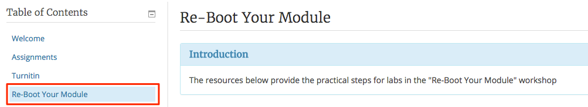
Open Lab 01 - Getting Started if you notice in your web browser you should have a new tab, working with tabs in your browser window allows you to work in several different systems at the same time, i.e. search in one tab, Moodle in another tab, some other website in another, you just need to be aware of which tab is for which system.
Some Basics First
In this lab we will learn which web browser we will use together with some basics of bootstrap along with the process of taking bootstrap and integrating it with Moodle
Web Browsers
Web browsers allow us to retrieve and browse content on the world wide web, we can make requests for a web site by typing in a web address of the web site that we are looking for i.e. Moodle, Gmail, RTE, Irish Time etc.
This is the WIT Moodle site, and as you can see the web address of the moodle web site is in the address bar, remember this because will use the web address of different resources later.

Web Browser Types
There are different types of web browsers, you will be familiar with the more popular one such as Google Chrome, Mozilla Firefox, Internet Explorer, have a look at the images below, we recommend Google Chrome.
Google Chrome works best with Moodle and is the web browser that we will use in these labs

Continue to step 02
Bootstrap Basics
In this step I will introduce Bootstrap and what it is and what it allows us to do in Moodle, where Bootstrap is located on the web etc
What is Bootstrap?
Bootstrap is a web framework that allows us to develop the interface (fromtscreen) of web sites, in our case Moodle, with the aid of components, this software is free and is easily access through the bootstarp website.
New tabs - click here to open a new Bootstrap tab
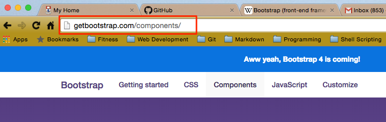
As you can see we have landed on the Components page, this is where we will get some of our basics components for this lab, you will have to to go back and forth from Moodle to the Bootstrap components page a lot, so take a few a minutes to browse through somw of the components.
What can I do with Bootstrap?
We can use any of these bootstrap components in Moodle, all of these components can be used individually or we can combine some components inside another component, that's for later labs :) for the time being I want you too look at the Jumbothron component
You can see what these components looks like and the code above, we need to get the code for this component and use it in Moodle, for us to use it we must Copy (Ctrl C) the code by clicking the Copy button, do this in the Bootstrap tab of your Web Browser, this will copy the code to the clipboard of the machine your using.
A jumbotron is mainly used as a welcome message, and in Moodle we normally use it in the Welcome section.
Continue to step 03
Integrate Bootstrap into Moodle
In this next step we will look at the Process of taking a bootstrap component (like a Jumbotron) and integrating it into Moodle, one thing you need to remember is that it dosent matter if you make a mistake you can always just go back to a previous step and start again.
Decisions Decisions
While certain Bootstarp compontents lend them selves to certain areas in a Moodle module, sometimes you just need to decde on a location that suits what exactly who are trying to achive. So for instance in the welcome section is normal to use a Jumbotron, but a Jumbotron might look out of place in some other section.
Sometimes all you want to do is provide navigation or highlight some instructions to students, sometimes you might want to make the studsent aware of a situation for instance when or how they need to reply to a popst in a discussion forum.
What bootstrap will allow you to do is provide a better more ingaging expierance through applying a different struture using bootstrap.
The Welcome Section
Remember we copied the code for the Jumbotron now visit this page again and hit the copy button to copy the code to your clipboard.
Now, back in your Moodle web browser tab open your Training Module and Turn Editing on (click the button top right), now, click on the cog wheel alongside the Section name (Welcome)
This is how we get Bootstrap code into Moodle
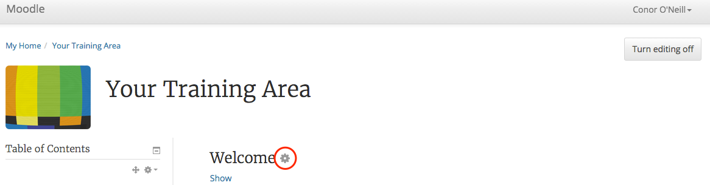
We now ned to get set up so Moodle can take the code, click the show more buttons 1st then the HTML butoon 2nd, now paste in the code you just copied (CTRL V)
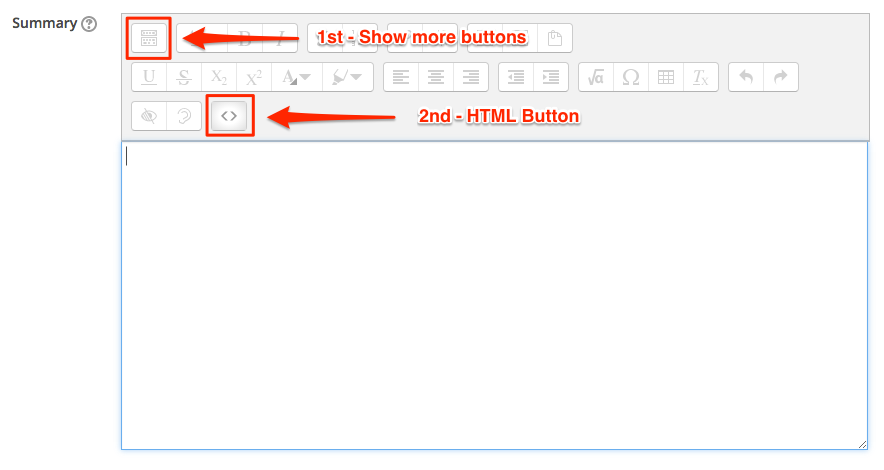
When you click the HTML button again your should see the Jumbotron, Note this process of copy and paste is same process we use each time we go from the bootstrap website to Moodle, its just what you want anf copy and paste to any palce in Moodle that has a HTML button
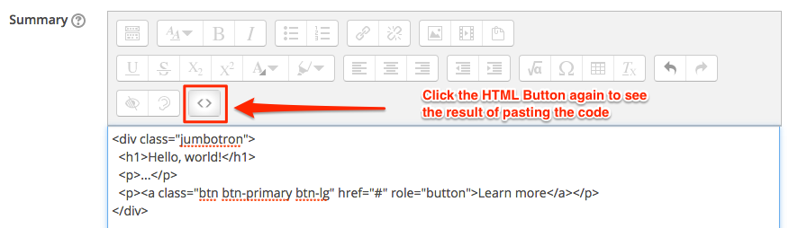
Now we need to change the text in the Jumbotron so that we can include our own message to the students, you can do this by simply changing the Heading and the message, delete what is currently in place then re-type your own text.
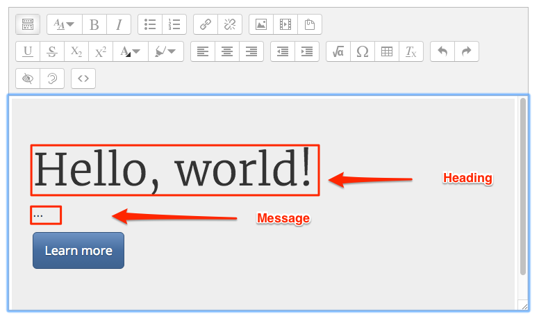
After you delete the default text and place your own text in there you shpuld have something that looks like the image below.

Thats it, well done, you just got your first peice of bootstrap into Moodle :)
Continute to Step 04
Section Headers
As you can see from your training module each section (Table of Contents) has a default title of Section 1, Section 2 etc. We should name these section header with meaningful names, rename section 1 to 'Bootstrap Stuff' by clicking on the cog wheel alongside the section header (section 1), untick the default box and enter the name 'Bootstrap Stuff'
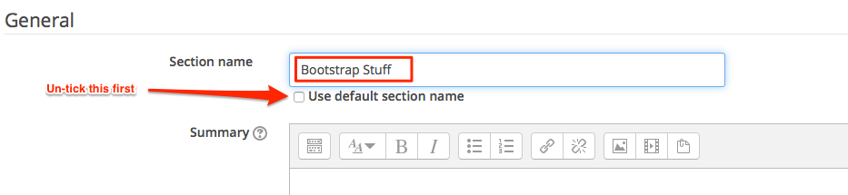
Panel's
Go back to your Bootstrap tab and look for a component called Panels

We want to use a panel at the top of our new section in Moodle (the one you just called Bootstrap Stuff) we want to place a panel there, again, we are going to just copy some code and paste it into the header, first we need to have a look at the code we want to copy, we want a panel with a title so we just need that code.

Which code?
This time we dont need to copy all the code just the part we need, in some case's we only need certain parts of a component, for instance, with panels we have panels with and without titles, we want the panel with a title, however bootstrap displays all the code for both with and without panel titles in the same window. See image below for the code you need.
The copy and paste process again
Copy just the that piece of code and go back to your module in Moodle, goto the section named 'Bootstrap Stuff' and click on the cog wheel along side that section name. Again go through the same process of clicking on the Show more Buttons and then the HTML button
Now we can paste in the code for the panel with a title, again to see what it looks like just click on the HTMl button again.
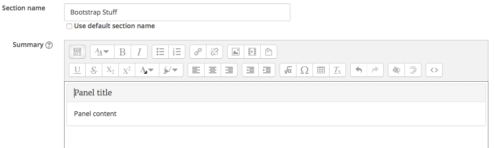
Change the text
We can change the text now, again hightlight the header where its say 'Panel Title' and change it to 'Introduction' and type some message that describes the section contents, in this case something about bootstrap.
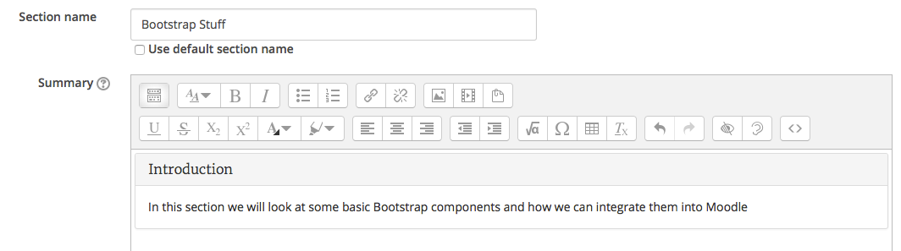
Make some improvements
This still needs some work, so what we could do is make the panel title bold and we will change the color to match the Moodle Theme. Go back and click on the HTML button and delete your code, then copy and paste the code below back in again, do you notice any changes in the code ? Compare the first line to what you originally had.
<div class="panel panel-info">
<div class="panel-heading">
<h3 class="panel-title"><b>Introduction</b></h3>
</div>
<div class="panel-body">
In this section we will look at some basic Bootstrap components and how we can integrate them into Moodle<br></div>
</div>Where do we get tne colors?
Have a look at the imake below for some different colors
Finished Panel
This is the finished panel - save you work now.
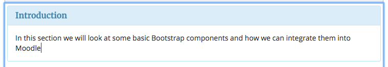
Conclusion
Now we have introduced color, and we can use different colors, in this case we change the code so that panel uses 'info' instead of 'default' we have also looked at panels and again we use the same Process to integrate the code into Moodle
Continue to step 05
Alerts
Another Bootstrap component is Alert, these can be used to "Alert" users to a particular instruction or some important information.
Different Alerts
As you can see from the image above there are different type of Bootstrap alerts and each one can be used in different situation, we might use the 'Green' alert when a student finishes a quiz, we might use an 'Red' alert when issuing some important instructions to students
In Announcements
Back in you Moodle Training area we will include an alert to student letting them know if they they are not allowed to reply to posts in the Announcements forum
- Turn editing on and in the Welcome section click show
- Click on Edit beside the 'Announcements' activity and then Edit Settings
- Make sure the Format is set to HTML Format
In Bootstrap
In your Bootstrap tab, navigate to the Alert compontent in Bootstrap and copy the last line of code, Danger this will copy the 'Red' Alert (Dont Panic :)
We will paste this line of code into our Announcements forum, we will do this because we want to let the student know that when they receive an Announcement that you, the Lecturer, do not want them to reply. We have permissions in place to prohibit this, however the students wont know about that.
Back in Announcements
In Edit mode, edit your Announcements activity,
- click on the Show more Buttons then the HTML button and paste in the line of code you just copied.
Currently its says 'General news and announcements' delete that and paste in the line of code. Now we can change the contents of the alert to make it more useful to us.
So, currently this line of code
<div class="alert alert-danger" role="alert">...</div>Results in
So if you changed ... to your message, or just copy what i have below
<div class="alert alert-danger" role="alert"><u><b>Please</b></u> do not reply to messages from this Announcements forum. Thanks<br></div>You should end up with whats on the image below, this is what the student will see of they read you message in Moodle, you can also paste an alert into an actual post so that the students will see this alert in the actual post.
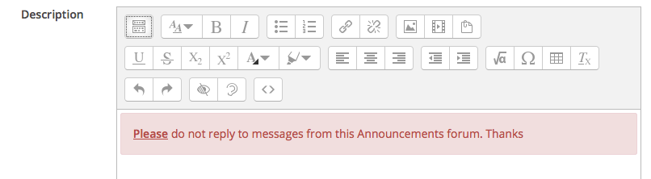
Continue to Exercises
Exercises
Exercise 1
In your training module create a post (new topic) in your Announcements forum and place an alert (you can use the code we just used in step 05) into the post, call the subject of the post 'Bootstrap Alerts' and place your line of code into the Message (same process as before - show more buttons, then HTML button)
Exercise 2
Answer these questions located here